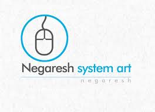

milad Omrani Tamrin
A Research Assistance in ECE at Ecole Polytechnique Montrael
about me
my name is Milad Omrani Tamrin, I was born in northern part of Iran, a beautiful city called RASHT. trust me, you should be there and enjoy the beauties of my hometown. My research interests are mainly machine learning and also Image Processing. I enjoy hiking, movie, reading, swimming, cycling.

Education,
Currently, I've doing my PhD in Electrical Engineering at Polytechnique, based on Montreal, Canada.
My academic and professional research projects
Developed and integrated Deep Learning model for generating high-quality historical document images. Developed and optimized Deep Learning model for degradation removal and binarization of historical document images. Developed and upgraded a multi-class supervised deep learning framework for recognition of various objects on an image. Worked with an interdisciplinary team of three to labelling data and per-processing step in order to prepare dataset for deep learning training purposes.
Using deep learning approaches to overcome limited dataset issues within semiconductor domainThe project aims at designing and fabrication is to increase the production yield, images are the most important pieces of data used to detect defect-free wafers. However, there are many tools that can be installed specifically to monitor production lines, inspect mapped defects and detect the main causes of die failures by using wafers images during semiconductor manufacturing process. The underlying objective is to overcome the need for a physical check on the wafer which are in most cases too long. Thus, the need to have a design that will measure and detect these visual faults in an automated fashion is a big challenge for the industry.
Text categorization using Machine Learning techniquesThe growth of the internet has sparked an explosion in producing the data especially in the form of text. Because of increase in volume of the information in digital form, use of text categorization tech- niques becomes essential to find relevant information. Text categorization is the task of classifying text documents into different categories from a predefined set, and the goal is to automatically assign a proper label to each of them based on the subjects or contents. In this work, some frequently used cat- egorization techniques were implemented, and their performances were assessed and compared together.
Research on Evaluate fuzzy edge detection in remote sensing imagesPropose fuzzy logic theory as an appropriate method for enhancement and edge detection of remote sensing satellite images which can be contaminated by many sources of uncertainties. Evaluate dif- ferent edge detection algorithms based on fuzzy logic and edge detection procedures in the context of satellite remote sensing images. Evaluate IFED as the most efficient method amongst other fuzzy algorithms.Implement Edge Gray Value (EGR) method In order to select the best number of iterations in fuzzy enhancement.
Study of using data mining algorithms for weather forecastConsider weather data and technical instructions. Design and normalize 39000 weathering data in- cluding Max/Min/Ave of wetness, Max/Min/Ave of temperature, rainfall, pressure, date and result. Apply the decision tree C5.0, artificial neural networks, CART, and Bayesian networks for developing a forecasting model to predict the weather forecasting using the normalized data. Evaluate the decision tree algorithm as the most accurate technique of data mining in prediction of weather forecast.
Research on influence of taxi station location on urban traffic using satellite imagesPresented a Seminar on Indirect Model Analysis, explaining the method to compute response of Study the structure and properties of roads using satellite images. Use descriptive statistics and inferential statistics by SPSS software. Analyse the collected data via SPSS. Enhance the images by fuzzy Image enhancement algorithms using Matlab and detect the edges of roads. Measure the performance of Im- ages by PSNR1. Detect the edges of improved images of roads and find the best location of taxi stations.
Professional Experiences
Research Intern at Teledyne Dalsa, Bromont, Canada Winter 2018- present, Job Description: Working on Machine Learning Moldes to imropve the performance of defect detecton during fabricating process
Software Developer at Negaresh System Art Co. Rasht, Iran, Summer 2011-2017 Job Description: Software designer and developer (Front- End)
Get in touch
I would be great if you let me know about your comments.